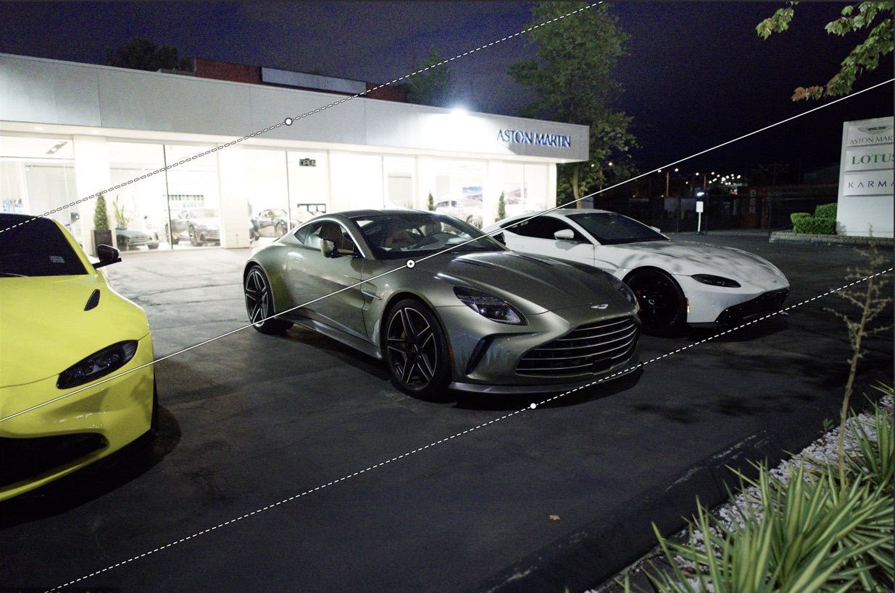

Raw editor for macOS
The RAW editor
you own.
Fast, honest RAW development. One‑time purchase or free — never a subscription.
In development · not yet released · everything below is built and measured

A recreation in HTML — drag the Exposure slider. The photographs further down are real renders.
Speed
Full resolution,
while you drag.
Orion develops a 24-megapixel RAW at its full size as the slider moves — not a rough preview that sharpens after you let go. Your edit keeps up with your hand.
9.29 ms per frame, 95th percentile, on a 6,024 × 4,024 Sony ARW — measured, not quoted.
Local edits
Light, exactly
where you point.
Drag linear and radial gradients on the photograph itself. A mask stays on its subject through crop, rotation and straightening — and the export matches the preview.


Not built yet: brush, luminance-range and subject masks. Nothing on this page pretends otherwise.
Colour
Colour you
can check.
Every non-trivial filter names the published paper it came from, so when a photograph looks right you can see why. What isn’t sourced yet sits on a public list — twelve entries, kept on purpose.
- DehazeHe, Sun & Tang · CVPR 2009
- ClarityParis, Hasinoff & Kautz · SIGGRAPH 2011
- Shadow liftHessel & Morel · IPOL 2019
- ToneAgX — Blender’s default view transform
- Tone curveFritsch & Carlson · SIAM 1980
No subscription.
Ever.
Lightroom is rented. Orion is owned — built by one developer for their own camera, and for the students and hobbyists a monthly bill prices out.
- 1,558
- lenses with measured corrections for distortion, vignetting and fringing
- XMP
- edits live beside your files in open sidecars — no catalogue, no import, no lock-in
- 0 / month
- one-time purchase or free; the price isn’t set yet, the model is
Where it stands
Built. Not yet.
Never.
In the app today
- Sony ARW, Bayer RAW and DNG
- Exposure to curves, colour mixer, grading wheels
- Clarity, dehaze, shadow lift, .cube looks
- Auto-enhance that moves real sliders you can argue with
- Sharpening and profiled denoise
- Crop, straighten, measured lens corrections
- Gradient masks, dragged on the photo
- Export with your location stripped by default
Not yet
- Brush masks — painting isn’t wired up yet
- Luminance, colour-range, subject and sky masks
- Spot removal, perspective correction
- Presets, copy-paste settings, batch export
- Fujifilm X-Trans — refused by name, not scrambled
Never in v1
- Cloud sync and a mobile app
- A full asset manager
- Layers and Photoshop-grade retouching